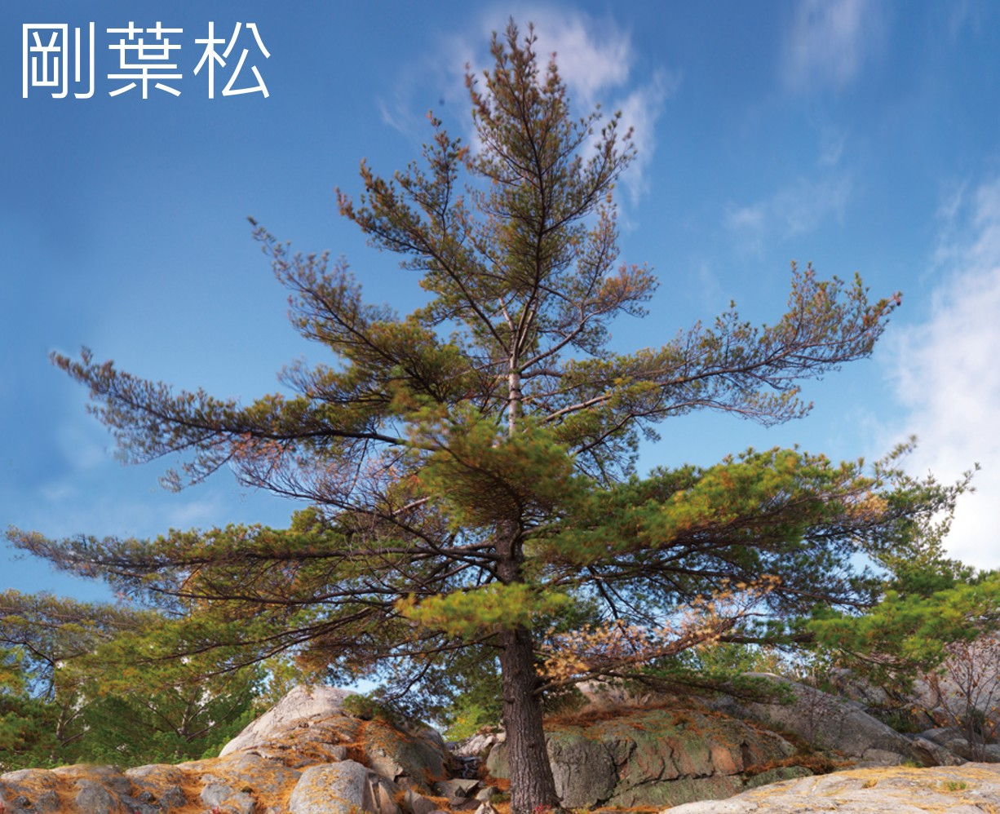
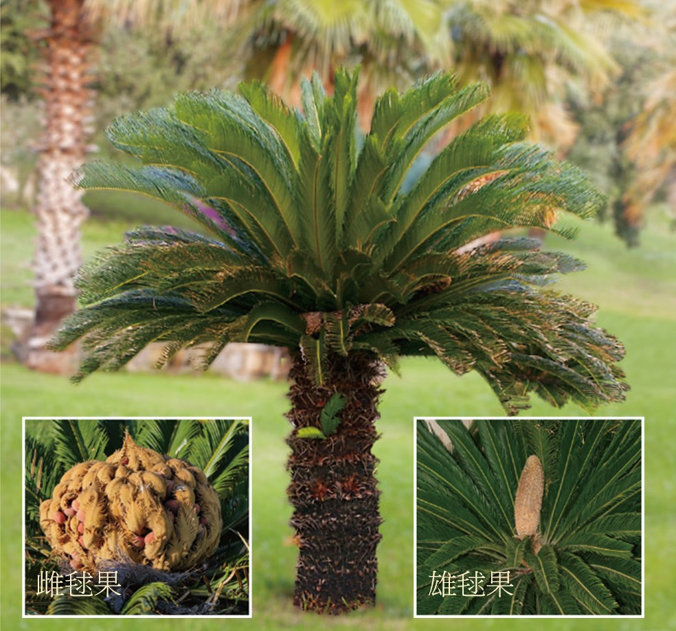
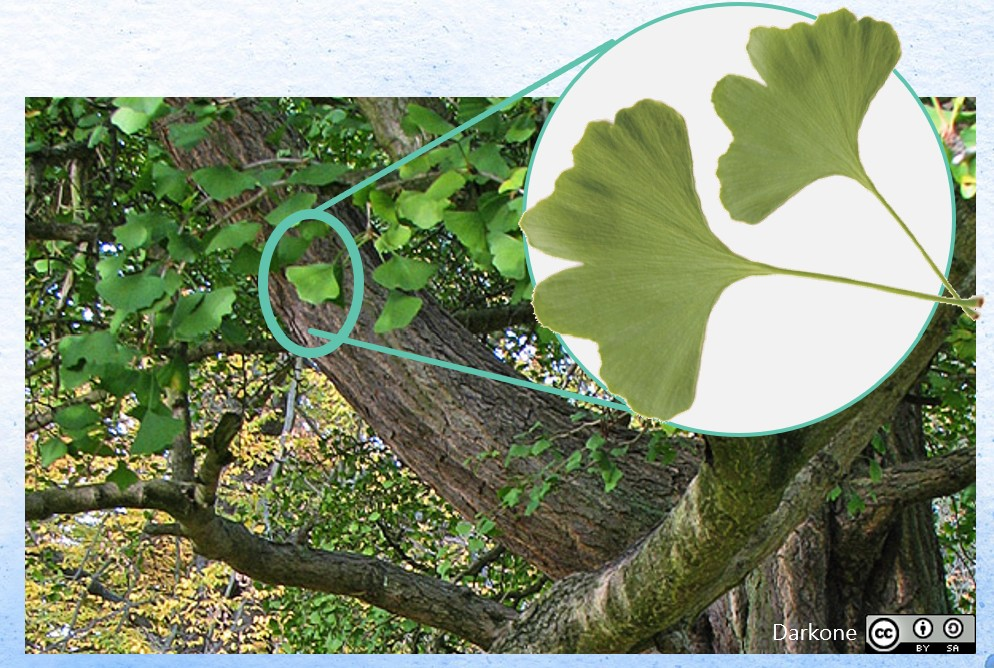
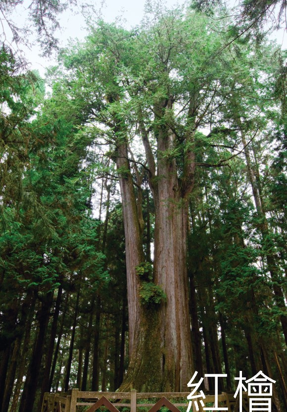
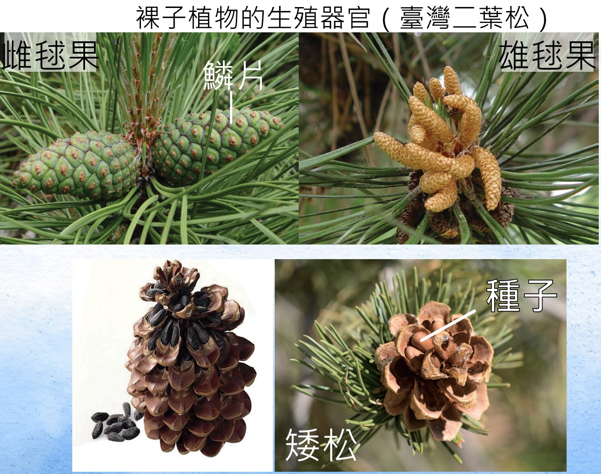
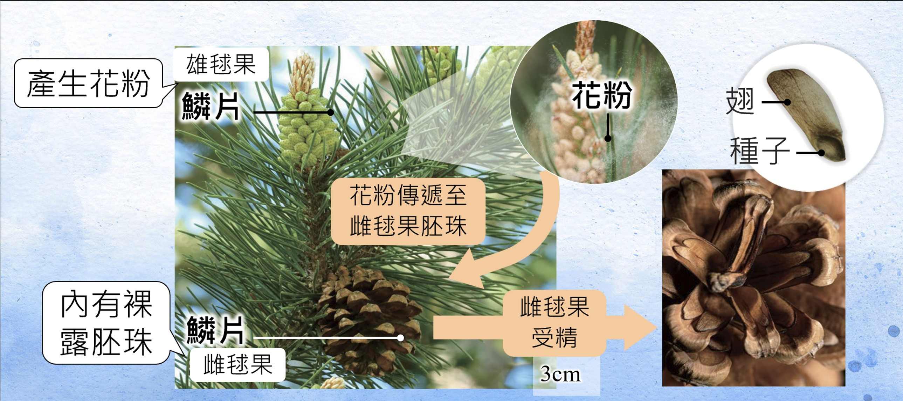

裸子植物是種子植物的一群，具有維管束， 能在陸地上穩定生長，也常長成高大的木本植物。
這一頁你會認識裸子植物的關鍵特徵： 它們以種子繁殖， 但種子沒有果實包住， 常見代表有松、杉、柏、蘇鐵與銀杏。
裸子植物屬於種子植物， 具有維管束， 但它們的種子裸露，沒有被果實包在裡面。
互動任務：哪一句最符合裸子植物？
請選出最正確的描述。
裸子植物和被子植物都屬於種子植物， 也都有維管束。 最大差別在於：裸子植物的種子裸露， 被子植物的種子則包在果實裡。
互動任務：先點描述卡，再點左邊類別完成配對
三組都配對完成後，才能檢查答案。
常見的裸子植物有松樹、杉樹、 蘇鐵、 銀杏與柏樹(紅檜也是屬於柏樹)。
互動任務：先翻完卡片，再回答問題
把卡片都看過後，選出正確敘述。

點一下翻面
常可見毬果，是常見的裸子植物代表。

點一下翻面
外形像棕櫚，但屬於裸子植物。

點一下翻面
也是裸子植物的代表之一。

點一下翻面
也是常見的木本裸子植物。
很多裸子植物會形成毬果。 它們的種子常著生在毬果的鱗片上， 並不會形成真正的果實把種子包住。

互動任務：判斷正確敘述
請選出最符合毬果與種子關係的說法。
裸子植物沒有真正的花，常用毬果完成生殖。 生殖過程中會經過花粉傳播、 受精、 種子形成與 萌芽長成新個體等階段。

互動任務：把裸子植物的生殖過程排成正確順序
請用上下移動調整順序，再按檢查答案。
裸子植物常見於山區、公園、校園或行道樹環境， 有些還是重要的木材來源。
情境任務
小華在校園裡看到一棵松樹和地上掉落的毬果，想判斷這是不是裸子植物的特徵。
現在你已經認識蘚苔植物、蕨類植物和裸子植物， 可以試著把不同植物放回正確的分類了。
互動任務：替每種植物選出正確分類
每列都要選好，才能檢查答案。
來把這一頁最重要的觀念整理成一張簡單的身分證。
互動任務：完成裸子植物身分證
每一欄都要選出正確答案。